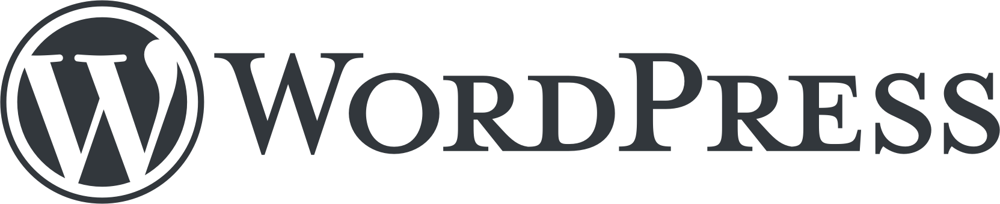

Wat is Wordpress

WordPress is een open-source contentmanagementsysteem (CMS) waarmee je websites kan bouwen en beheren zonder alles van nul te moeten programmeren.
Vandaag draait ongeveer 40% van alle websites wereldwijd op WordPress.
Dat maakt het veruit het meest gebruikte CMS ter wereld. Van kleine hobbyprojecten tot professionele platforms.
Wat is een CMS
Een CMS (Content Management System) is software waarmee je een website kan beheren zonder dat je elke pagina handmatig moet programmeren.
Via een CMS heb je een website waarbij jij, of de persoon of het bedrijf waarvoor je de website maakt, de inhoud kan beheren via een UI, in plaats van HTML-bestanden te moeten schrijven en uploaden.
Voordelen van WordPress
- Open-source en gratis
- Grote community van ontwikkelaars:
Duizenden thema’s en plugins - Veel documentatie en ondersteuning online
- Relevant op de arbeidsmarkt:
WordPress wordt massaal gebruikt in de praktijk
Kennis ervan is een concrete meerwaarde voor webdevelopers
Veel freelance en professionele opdrachten draaien rond WordPress
Nadelen van WordPress
- WordPress websites zijn groter:
Het gebruikt een databse
Het voert PHP-code uit op elke pagina - Veiligheid vraagt aandacht:
Populair doelwit voor aanvallen Slechte plugins of verouderde installaties vormen risico’s - Prestatieproblemen:
Te veel plugins kunnen een site traag maken
Thema’s zijn vaak zwaar en inefficiënt
WordPress is een algemene oplossing, geen wondermiddel
Illusie van “geen code nodig”
Veel gebruikers denken dat WordPress codevrij is, maar in de realiteit blijft kennis van HTML, CSS, PHP en SQL belangrijk.
Waarom WordPress hosten op je eigen Raspberry Pi
Een Raspberry Pi gebruiken als Wordpress server heeft grote educatieve waarde:
- Volledige controle.
Je beheert zelf het besturingssysteem, de webserver, de database en WordPress. Niets is verborgen. - Digitale autonomie: Je bent niet afhankelijk van grote platformen of cloudproviders. Je begrijpt waar je data staat en hoe die wordt beheerd.
- Geen hosting geheimen meer: Je leert wat hosting écht betekent: configuratie, beveiliging, updates en foutopsporing.
- Kosten en duurzaamheid: Een Raspberry Pi is goedkoop, energiezuinig en perfect voor experimenten en leren.
WordPress.org vs WordPress.com
WordPress.org
- De open-source software die je zelf downloadt en installeert
- Volledige vrijheid: eigen hosting, thema’s, plugins en code
- Jij bent verantwoordelijk voor onderhoud en beveiliging
- Dit is wat professionele developers gebruiken
WordPress.com
- Een commerciële dienst die WordPress voor jou host
- Beperkte vrijheid, zeker in de gratis en goedkope formules
- Minder controle over code, plugins en data
Opdracht: Raspberry Pi als WordPress server
Je krijgt geen stappenplan. In plaats daarvan ga je zelf op zoek naar informatie, probeer je oplossingen uit en reflecteer je regelmatig over je leerproces.
Het einddoel is tweeledig:
- Product: een werkende WordPress-installatie op je Raspberry Pi
- Proces: aantonen dat je doelgericht onderzocht, kritisch informatie verwerkte en je leerproces kon bijsturen, in een duidelijk, gestructureerd en professioneel digitaal document
Zoekstrategie en bronkritiek
Voor je begint, bepaal je hoe je informatie zal zoeken.
Noteer alles duidelijk in het document.
Noteer:
- In welke taal ga ik zoeken?
- Welke soorten bronnen verwacht ik te gebruiken?
Noteer bij het maken van je onderzoek:
- Welke zoektermen ga ik gebruiken?
- Kies minstens 2 verschillende bronnen.
- Welke bron vertrouw ik het meest? Waarom?
Je kan AI-tools gebruiken als ondersteuning, maar AI is geen bron.
Je mag AI gebruiken om:
- Je vraag beter te formuleren
- Vaktermen te laten uitleggen in eenvoudigere taal
- Mogelijke zoektermen of invalshoeken te bedenken
Je mag AI niet gebruiken als:
- Eindantwoord dat je zomaar overneemt
- Vervanging van echte bronnen
Technisch vooronderzoek
Onderzoeksvragen:
- Welk besturingssysteem draait meestal op een Raspberry Pi?
- Wat is de functie van een webserver?
- Waarom heeft WordPress een database nodig?
- Wat is de rol van PHP binnen WordPress?
- Maak een eenvoudig schema dat toont hoe deze onderdelen samenwerken.
- Wat zijn VNC, SSH en Raspberry Pi Connect? Geef minstens 1 voordeel van elke technologie.
Reflectie:
- Welke begrippen waren nieuw voor mij?
- Hoe heb ik geprobeerd ze te begrijpen (lezen, video, schema, uitleg vragen)?
Installatie OS
Voor je begint te installeren, voeg je een logboek toe aan het document. Dit logboek gebruik je tijdens de hele opdracht.
Een logboek is geen stappenplan achteraf, maar een verslag tijdens het werken.
Het logboek toont hoe je denkt en leert, niet alleen wat er lukt. Tijdens deze opdracht is het niet erg om fouten te maken. Integendeel: fouten zijn vaak leerrijker dan wanneer alles meteen lukt. Wanneer iets niet werkt, documenteer dit dan zorgvuldig:
- Welke foutmelding of probleem je tegenkwam.
- Welke stappen je hebt ondernomen om het probleem op te lossen.
Nu ga je praktisch aan de slag met het installeren van een besturingssysteem (OS) op een Raspberry Pi.
Je werkt onderzoekend:
- Je volgt geen blind stappenplan
- Je probeert te begrijpen wat elke stap doet.
- Je staat stil bij keuzes die je maakt.
Stappen:
- Schrijf in je logboek welk OS heb ik gekozen en waarom?
- Voeg screenshots toe om te documenteren hoe je het OS hebt kunnen installeren.
Reflectie:
- Wat ging vlot? Waarom?
- Waar liep ik vast?
- Welke strategie gebruikte ik?
- Wat zou ik volgende keer anders aanpakken?
Installatie WordPress
Nu de Raspberry Pi een OS heeft, is het tijd om WordPress te installeren:
- Zoek doelgericht naar bronnen die je kunnen helpen bij de installatie.
- Beoordeel deze bronnen kritisch en kies er één waarmee je aan de slag gaat.
- Merk je tijdens de installatie dat een andere bron toch geschikter is, dan mag je van bron veranderen. Dit maakt deel uit van een realistisch leerproces.
Documenteer het volledige verloop duidelijk in je logboek, inclusief gemaakte keuzes, ondernomen stappen en screenshots ter ondersteuning.
Reflectie:
- Wat zou ik anders aanpakken als ik opnieuw moest beginnen?
- Wat heb ik geleerd dat ook nuttig is voor andere IT-opdrachten?
Puntenverdeling
| Puntenverdeling: Raspberry Pi Ethiek | |
|---|---|
| Zoekstrategie en bronkritiek | 3 |
| Technisch vooronderzoek | 3 |
| Technisch vooronderzoek reflectie | 1 |
| Installatie OS | 1 |
| Installatie OS reflectie | 1 |
| Installatie WordPress | 5 |
| Installatie WordPress reflectie | 1 |
| Digitaal document: overzichtelijk, professioneel, correcte school- en vaktaal | 3 |
| Totaal | 18 |
| Doelen: Raspberry Pi Ethiek | |
|---|---|
| 13.BV3_13.01 | De leerlingen reflecteren cyclisch, vakspecifiek en vakoverschrijdend over het eigen leerproces en sturen het op basis daarvan doelgericht bij. |
| 13.BV3_13.02 | De leerlingen zetten (meta)cognitieve leer- en regulatiestrategieën in om zich leerinhouden eigen te maken. |
| 13.BV3_13.03 | De leerlingen gebruiken school- en vaktaal. |
| 13.BV3_13.04 | De leerlingen zoeken doelgericht informatie in diverse bronnen en verwerken die op een kritische en systematische manier. |
| 13.BV3_13.04.BV3_13.04.01 Subdoel 01 | De leerlingen bepalen zelfstandig een geschikte zoekstrategie. |
| 13.BV3_13.04.BV3_13.04. 02 Subdoel 02 | De leerlingen beoordelen op kritische wijze digitale en niet-digitale bronnen op bruikbaarheid op basis van aangereikte criteria. |
| 13.BV3_13.04.BV3_13.04.03 Subdoel 03 | De leerlingen verwerken zelfstandig de informatie uit de bronnen i.f.v. een vooropgesteld doel. |
Van lege installatie naar echte website
Nu je WordPress hebt geïnstalleerd, gaan we experimenteren.
Niet meteen plugins installeren. Niet meteen thema’s aanpassen.
Eerst begrijpen we de basis.
Opdracht: Groepswerk minimalistische website maken
Maak een eenvoudige website met:
- Een homepage
- Minstens 2 andere pagina’s
- Een blogbericht
Beperk jezelf tot:
- Standaard thema’s
- Geen page builders
- Geen extra plugins
| Puntenverdeling: Minimalistische Wordpress website | |
|---|---|
| Homepage | 2 |
| Twee andere pagina’s | 2 |
| Blogbericht | 2 |
| Totaal | 6 |
| Doelen: Minimalistische Wordpress website | |
|---|---|
| BV3_04.01 | De leerlingen gebruiken courante functionaliteiten van vergelijkbare toepassingen om digitale inhouden te creëren. |
| BV3_05.01.BV3_05.01.01 Subdoel 01 | De leerlingen dragen in groepsactiviteiten actief bij aan de uitwerking van een gezamenlijk resultaat. |
| 13.BV3_13.04.BV3_13.04.01 Subdoel 01 | De leerlingen bepalen zelfstandig een geschikte zoekstrategie. |
Stap 2: Verdiepend onderzoek
Kies minstens 2 van onderstaande categorieën.
Je onderzoekt:
- Wat het technisch doet
- Welke risico’s of nadelen eraan verbonden zijn
- Hoe je het correct installeert of configureert
Lijst Geavanceerde Opties
Categorie 1: Beveiliging
- 1.1: HTTPS installeren (Let’s Encrypt)
- 1.2: Firewall configureren
- 1.3: WordPress beveiligen tegen brute force
- 1.4: Bestandsrechten onderzoeken
Categorie 2: Prestatie
- 2.1: Caching plugin testen
- 2.2: Database optimaliseren
- 2.3: Afbeeldingen comprimeren
- 2.4: Meten met PageSpeed
Categorie 3: Netwerk & Externe Toegang
- 3.1: Port forwarding instellen
- 3.2: Dynamic DNS gebruiken
- 3.3: Website extern bereikbaar maken
- 3.4: Uitleggen waarom dit risico’s inhoudt
Categorie 4: Database Diepgaander
- 4.1: Tabellenstructuur analyseren
- 4.2: Zelf SQL-query uitvoeren
- 4.3: Back-up en restore uitvoeren
Categorie 5: Thema-aanpassing
- 5.1: Child theme maken
- 5.2: CSS aanpassen
- 5.3: PHP-wijziging maken
Categorie 6: Automatisatie
- 6.1: Automatische back-ups
- 6.2: Cron jobs begrijpen
- 6.3: Updates automatiseren
Demonstratie
De demonstratie is niet enkel een moment om je resultaat te tonen, maar ook een peer learning-moment.
In IT gebeurt dat voortdurend: developers leren via documentatie, code reviews maar ook zeer veel door informatie met elkaar te delen.
| Puntenverdeling: Demonstratie verdiepend onderzoek | |
|---|---|
| Technische uitleg over je onderwerpen | 1 |
| Zijn er nadelen aan verbonden | 1 |
| Demonstratie over hoe je het activeert/instelt | 3 |
| Totaal | 5 |
| Doelen: Demonstratie verdiepend onderzoek | |
|---|---|
| 13.BV3_13.02 | De leerlingen zetten (meta)cognitieve leer- en regulatiestrategieën in om zich leerinhouden eigen te maken. |
| 13.BV3_13.03 | De leerlingen gebruiken school- en vaktaal. |
| 13.BV3_13.04.BV3_13.04.03 Subdoel 03 | De leerlingen verwerken zelfstandig de informatie uit de bronnen i.f.v. een vooropgesteld doel |
Created: 27/01/2026